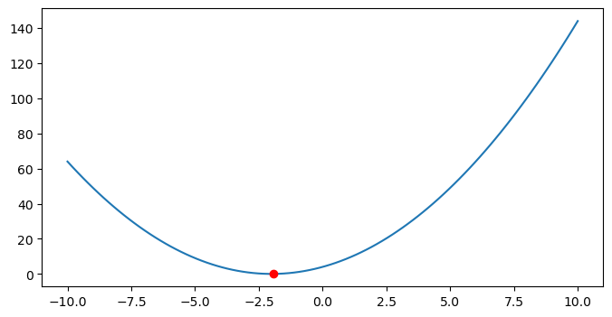
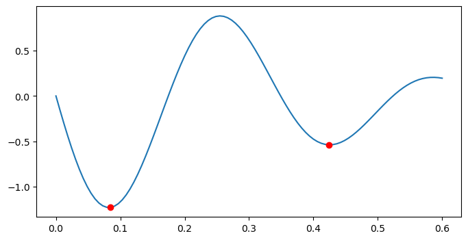
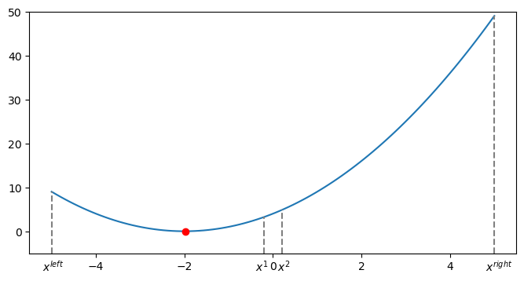
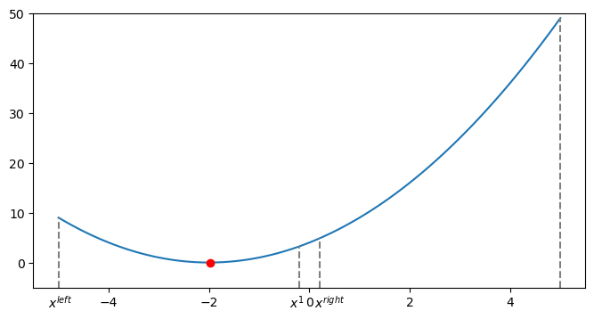

2 Unimodal Function and Search Methods
Nonlinear programming problems are generally hard to solve, but there are certain types of problems that allow efficient solution methods. In this chapter, we look at unimodal functions and some search methods developed for them.
2.1 Unimodal Function
A function \(f\) is unimodal if there exists only one maximum (minimum) point for maximization (minimization) problem. This means that, for maximization problems, the function increases in value up to a certain point, then decreases in value after reaching its maximum point. With unimodal functions, any extreme you find is guaranteed to be the global extreme. Perhaps the concept of unimodality is better grasped through an example. Consider the function \(f(x)\) defined as
\[ f(x) = (x + 2)^2, \ -10 \leq x <= 10 \]
Figure 2.1 plots function \(f\) on its defined range. Note that function \(f\) is unimodal only in the minimization case.
To better appreciate unimodality, let’s look at another objective function \(\text{min} \ -(1.4 - 2x) \sin(18x)\). Figure 2.2 shows its plot within range [0, 0.6]. It’s clear that there are two local minima for this objective function.
14
2.2 Equal Interval Search
In this section, we present the equal interval search method. It is assumed that an initial range \([lb, ub]\) is provided and the pursued minimum or maximum must locate within the range. The algorithm works as follows:
- Inputs: function \(f(x)\) to be minimized, initial range \([lb, ub]\)
- Output: local minimum \(x^*\)
- Algorithm Flow:
- Step 1: Choose a small value \(\epsilon\) as the stopping criterion. Let \(x^{left} = lb\) and \(x^{right} = ub\) denote the initial lower bound and upper bound of the current search range, respectively.
- Step 2: If \(x^{right} - x^{left} \leq \epsilon\), then \(x^* = \frac{1}{2}(x^{left} + x^{right})\), exit and output \(x^*\). Otherwise, choose two middle points according to \[\begin{align} x^{(1)} = \frac{x^{left} + x^{right}}{2} - \frac{\epsilon}{2} \\ x^{(2)} = \frac{x^{left} + x^{right}}{2} + \frac{\epsilon}{2} \end{align}\] If \(f(x^{(1)}) < f(x^{(2)})\), go to Step 3, otherwise, go to step Step 4.
- Step 3: Update the current search interval upper bound by \[\begin{align} x^{right} = x^{(2)} \end{align}\] and proceed to Step 2.
- Step 4: Update the current search interval lower bound by \[\begin{align} x^{left} = x^{(1)} \end{align}\] and proceed to Step 2.


def equal_interval_search(func, lb, ub):
x_left = lb
x_right = ub
eps = 0.01
points = np.empty(shape=(0, 4), dtype=float)
while abs(x_right - x_left - eps) >= 1.e-4:
x1 = (x_left + x_right) / 2 - eps / 2
x2 = (x_left + x_right) / 2 + eps / 2
arr = [x_left, x1, x2, x_right]
points = np.append(points, [arr], axis=0)
if f(x1) < f(x2):
x_right = x2
else:
x_left = x1
x_opt = (x_left + x_right) / 2
return x_opt, points
def func(x):
return (x + 2)**2
x_opt, points = equal_interval_search(func, lb=-5, ub=5)
print(round(x_opt, 2))
-2.0